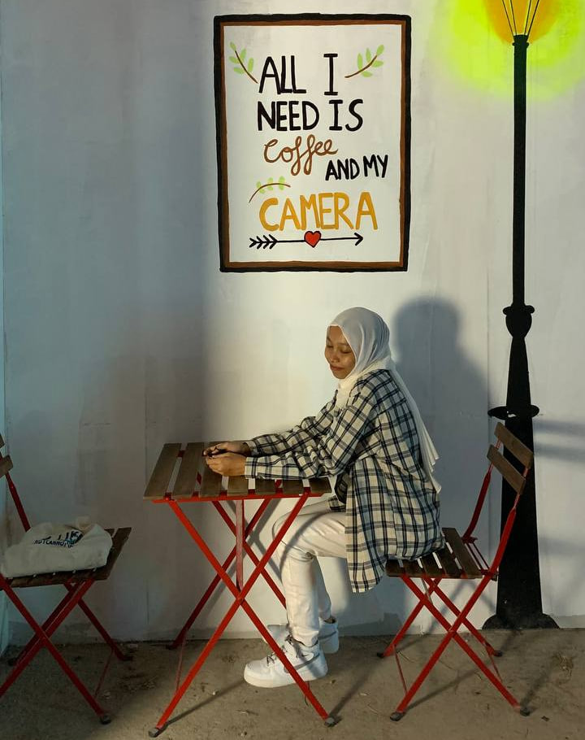

Hi! My name is Nur Liyana Syafiqah Binti Mohd Za'in. All of you can call me "Yana".
I am a final year diploma student in the field of Information Management. I am one of the students of UiTM Machang. I feel very proud to be able to continue
my studies here because it makes it easier for me to go home and the atmosphere here is very refreshing.
I was born at Hospital Besar Kota Bharu. I am a baby princess born in July 2002. I am the firstborn. I have five siblings, four girls and one boy.
My younger brother, on the other hand, died when he was four years old. I am enthusiastic about my work.
Because I enjoy what I do, I have a consistent source of inspiration to achieve my best.